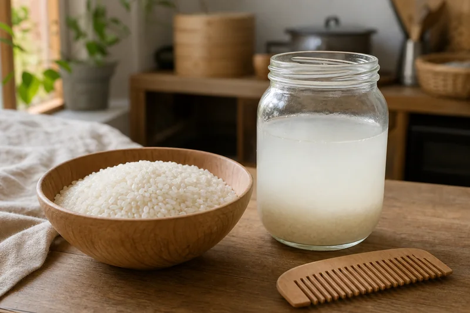

Rice Water Rinse: What My Grandmother Did with Leftover Rice Water
Every evening, my grandmother washed the rice for the next morning's congee. She'd swirl the grains in cold water until the water turned milky, then — instead of pouring it down the drain — she'd tip it into a chipped enamel jar she kept on the bathroom shelf. No label. No recipe. Just cloudy rice water, saved because it seemed wrong to throw away something that still had use in it. She'd been doing it since she was a girl in a mountain village where nothing was wasted — not because anyone preached about it, but because when you grow rice with your own hands, you don't pour any part of it down the sink.

Not a recipe, just a habit
Let me be clear about what this was and what it wasn't. My grandmother was not following a beauty routine. She didn't own a single bottle of conditioner. The word "hair care" had no meaning in her kitchen. She simply noticed, somewhere along the line, that the water left from washing rice made her hair easier to comb. That was the entire discovery. One observation, passed to her by her mother, who got it from hers, in a chain of women who never wrote anything down.
The modern internet has turned rice water into something else entirely — "fermented rice water" with precise ratios and fermentation schedules and before-and-after photos. My grandmother would have found this baffling. In her version, there were no ratios. You washed the rice. The water turned white. You saved it or you didn't. That was the whole thing.
I should say this plainly: what follows is not advice. It's not a hair care tutorial. This article records a household custom and is not medical advice. If you try it and your hair feels nice, that's luck. If it doesn't, you're out nothing but a few minutes and some water that was going down the drain anyway.
How she actually did it
The first rinse went down the drain. Always. "That one's for the dust," she'd say — the water that touched the rice straight from the sack, before it had been washed at all. The second rinse was the one she kept. She'd pour it through a strainer into the enamel jar, let it sit at room temperature if she planned to use it that evening, or tuck it into the coolest corner of the kitchen if she was saving it for the next day.
When it was time, she'd carry the jar to the bathroom. After washing her hair with plain soap — the same soap she used for everything — she'd pour the rice water slowly over her head, working it through with her fingers. Then she'd wait. Not long. Two or three minutes, maybe, while she wiped down the sink or folded a towel. Then she'd rinse it out with plain water from the tap.
That was it. No massaging. No "leave in for twenty minutes." No follow-up rinse with cold water to seal the cuticle. Just: wash rice, save water, pour on hair, wait a bit, rinse. The kind of routine that fits into the cracks of an evening without demanding its own slot on the schedule.
Some nights she let the water sit until the next morning — and by then it had turned faintly sour, a smell somewhere between cooked rice and yogurt. She didn't mind it. "It's just doing its work," she'd say. She never called it "fermented." That word belonged to pickled vegetables and soy sauce, not to a jar of leftover rice water on a bathroom shelf.
Variations I heard about later
Years after I left home, I started asking around — mostly out of curiosity, partly out of the strange loneliness that comes with realizing no one else in your new city does the things your family did. It turned out my grandmother's habit was not unique.
In parts of southern China — Guangxi, Guizhou, the Yao villages in the mountains — women added things to the rice water. Cha fu (茶麸), the pressed residue left after making camellia oil. Ce bai ye (侧柏叶), the flat leaves of the oriental arborvitae, boiled and strained. A friend from Longsheng told me her grandmother kept a dedicated clay jar just for rice water, and that the liquid inside was always fermenting — a living thing, fed every few days with fresh rinse water, drawn from as needed like a sourdough starter.
I have never tried any of these variations. I'm just recording that they exist, because oral traditions disappear faster than written ones, and these specific versions — the camellia cake, the arborvitae leaves, the living jar in the corner of a Yao kitchen — are worth remembering even if no one ever does them again.
Why this habit was never written down
The most ordinary things are the ones nobody bothers to record. Cookbooks document banquets. Medical texts document treatments. Beauty manuals document elaborate regimens. But a jar of cloudy water on a bathroom shelf? That's not a document. That's not even a recipe. That's just what you do when you've washed the rice and the water is still white and throwing it away feels like throwing away food.
This is, I think, the defining quality of household traditions. They survive not because they're effective — though some of them probably are — but because they fit. They slot into the existing rhythm of the day without demanding attention. Rice needs washing anyway. The water is there anyway. Pouring it into a jar instead of the sink adds maybe thirty seconds to the evening. Habits this cheap don't need advocates. They just need someone to do them. The same frugal household logic kept a jar of soap pods by the kitchen sink — plants that made their own foam, water that smoothed its own hair, a house where nothing came in a bottle.
I tried it once
I should be honest: I tried this exactly one time, and I did it wrong. I let the water sit too long — two days, maybe three — and when I opened the jar the smell was sharp enough to make my eyes water. I poured it out, washed the jar, and didn't try again for months.
The second time I used it the same evening. Fresh rice water, still cool from the tap, poured over my head in a bathroom that smelled like nothing in particular. I waited three minutes. I rinsed. And when my hair dried, it was — well, it was hair. Softer than usual, maybe. Easier to comb through, definitely. But nothing dramatic. Nothing worth a before-and-after photo.
What stayed with me wasn't the result. It was the feeling of doing something my grandmother had done, in the same sequence, with the same kind of jar, in a bathroom thousands of miles from hers. The water was cloudy. The comb slid through. And for three minutes I was standing in two kitchens at once — mine and hers, connected by nothing more complicated than rice and water and the stubborn feeling that some things are too ordinary to lose. The rice water itself came from the same nightly routine that produced her plain rice congee — one grain, two uses, nothing wasted.